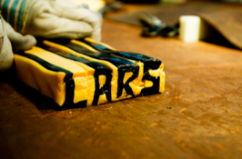

NÅR VI KOGER BOLSJER,
gør vi det efter gamle, traditionelle opskrifter. Da store dele af arbejdet med bolsjeproduktionen foregår ved håndkraft, er
vores fremstillingsmetoder stort set de samme som for over 100 år siden.
En ting der er meget vigtig ved bolsjekogning, er
sukkermassens temperatur.
Desuden skal man være hurtig, når man arbejder med den varme masse, så den ikke bliver kold og stiv.
Det første vi gør, er at varme fint sukker og vand op i en stor gryde. Bolsjemassen skal holdes mellem 160 og 170 grader, og
derefter hælder vi den ud på en varm bordplade.
Varmen gør, at sukkermassen er nemmere at arbejde med i hånden. Det er også mens massen endnu er varm, at vi tilfører smag
og evt. farve.
Herefter æltes massen over en metalkrog, som gør den blød og lækker. Sukkermassen pakkes nu ind i en større sukkerklump
for at samle bolsjet.
Til sidst trækkes den færdige sukkerklump til lange stænger, som hugges ud til de søde, smagfulde bolsjer.